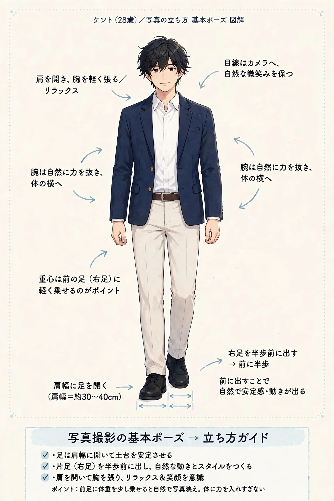
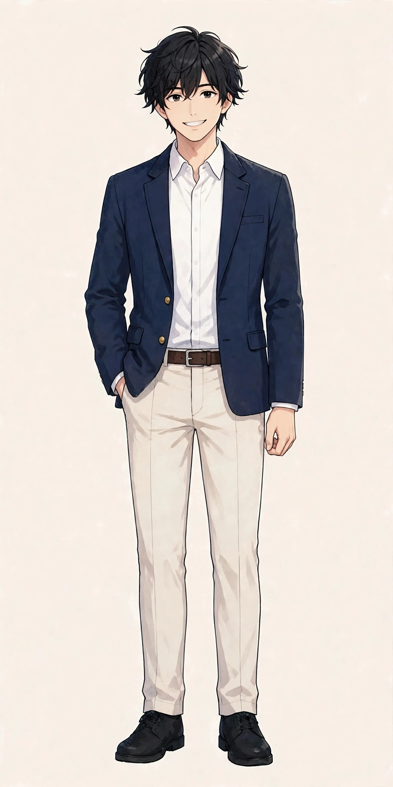

写真でカッコよく見えるポージング｜立ち方と手の置き方（メンズ）
ケント：男性の写真写りは、肩の開き方と手の置き方で大きく変わります。プロフィール写真にも使える基本をまとめました。
基本1：肩を開き、片足は半歩前
肩を少し開いて立ち、足は肩幅に。片足を半歩前に出すと、正面写真でも平板になりません（図1）。胸を張りすぎると不自然になるので、肩を開く意識だけで十分です。

基本2：片手はポケットへ
両手をだらんと下げると、間の抜けた印象になります。片手をポケットに入れる（親指だけでも可）ともう片方は自然に下ろすと、形が決まります（図2）。腕組みは浅く、肘を張らないのが目安です。

服との関係
ポージングの前に、シャツのシワと襟元の確認を。服側の基準は40代メンズ 清潔感シャツの選び方にまとめています。歩いている姿ならカッコよく見える歩き方もどうぞ。
この記事のテーマに合う商品
PR：写真にも使えるジャージ・セットアップ（PR）


あわせて読みたい：カッコよく見える歩き方／トレーニング一覧